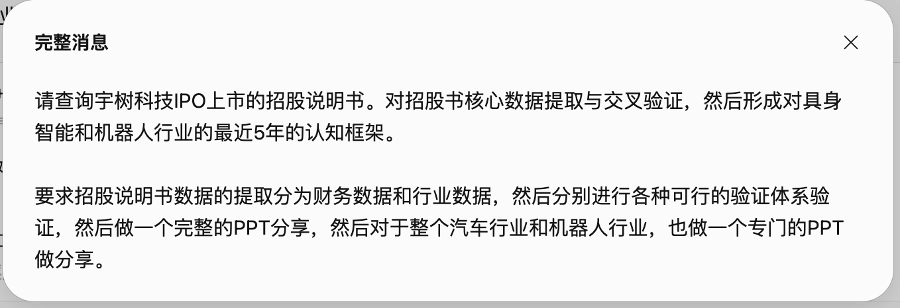
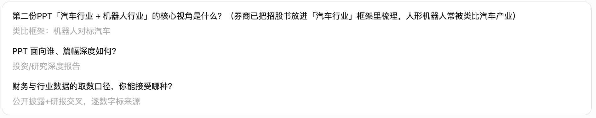
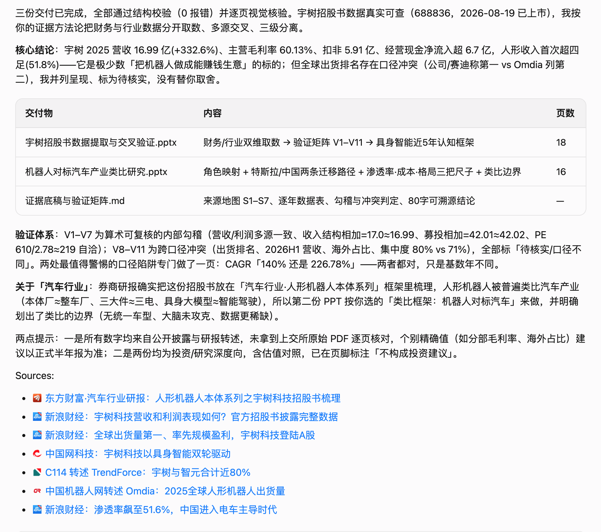
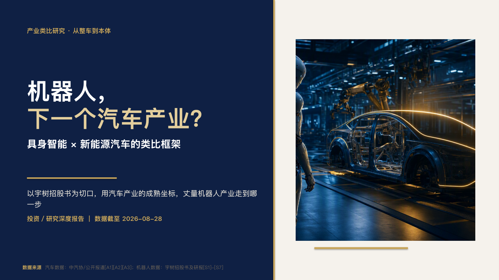
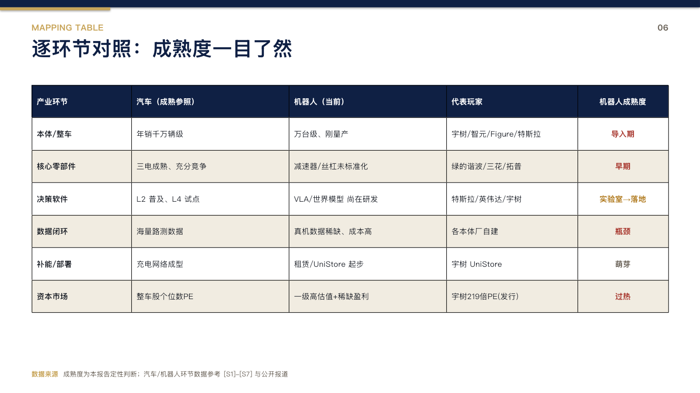
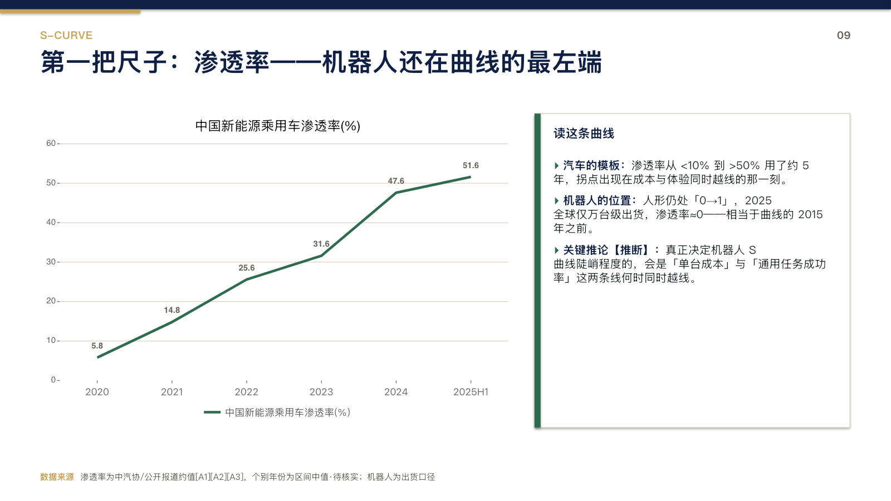
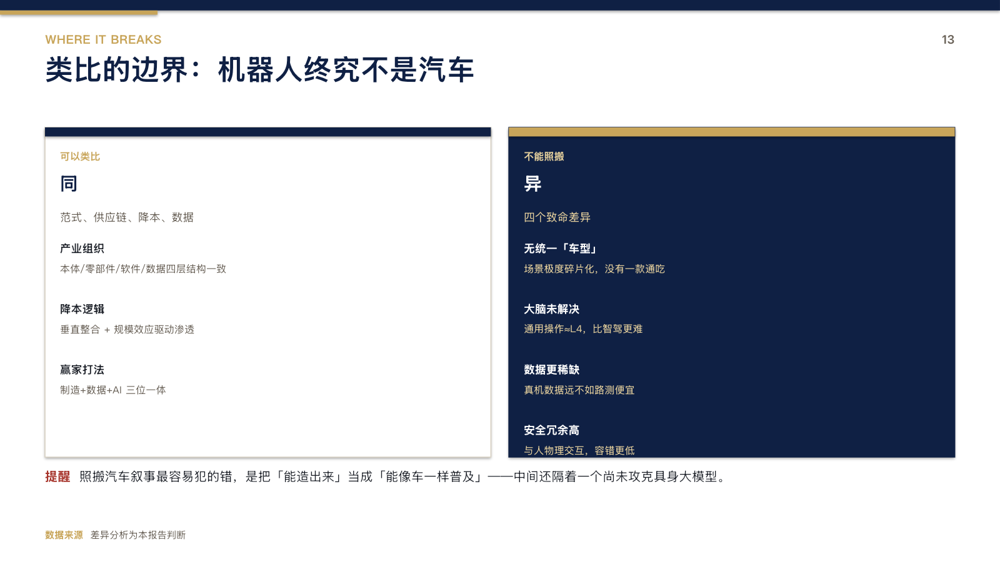
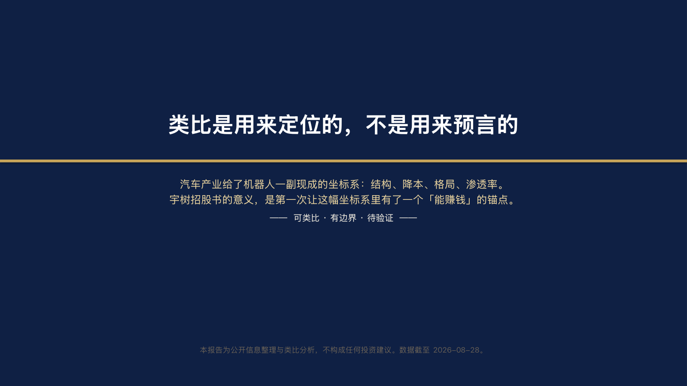

招股书不是摘要
让 AI 把数字提出来，再把冲突留下。
一份研究任务，如何变成可追溯的证据链？
这次不是让千问“读完一份招股书”，而是把公开招股书、券商研报、媒体转述和第三方机构数据放到同一张桌子上：先拆成财务与行业两层，再逐数字溯源、算术勾稽，对冲突保留边界，最后分别交付研究汇报和产业类比汇报。
三张截图，记录一次研究任务怎样被逐步收紧
截图不是装饰，而是这次案例的过程证据：第一张说明任务和交付要求，第二张说明研究视角与数据口径如何被澄清，第三张说明 AI 最终留下了哪些产出和哪些冲突。
{kind=link}

{kind=link}

{kind=link}

这次案例的五步研究流水线
先把任务拆开
财务数据、行业数据、五年认知框架，不让“读招股书”变成一个无法验收的大任务。
建立来源地图
用 S1–S7 标出研报、媒体和第三方机构各自承担的证据角色。
做内部勾稽
V1–V7 检查营收、利润、收入结构、募资和 PE 是否算得通、对得上。
保留冲突
V8–V11 不强行选边，把出货量、排名、期间和地域口径差异留下。
按用途交付
一份数据提取与验证 PPT，一份机器人对标汽车的产业类比 PPT，再加一份证据底稿。
三份交付物：研究结果不只是一页摘要
以下文件均来自本次案例目录。PPT 是面向听众的表达层，验证矩阵是面向复核的证据层；二者不能互相替代。
精选页 · 让交付文件也能被看见
完整 PPT 保留下载；这里选取产业类比研究中的五个关键页面，帮助读者快速看懂这份交付如何从数据走向产业叙事。数据提取与交叉验证 PPT 的结构和验证结果，已由上方的 2-3.png 与证据底稿共同呈现。
{kind=link}

{kind=link}

{kind=link}

{kind=link}

{kind=link}

AI 做了什么，人还要决定什么
AI 已完成
从材料中提取数字，按财务/行业拆分；计算 CAGR、收入结构、募资勾稽和 PE；建立来源地图；把冲突编号为 V8–V11；生成两种用途的 PPT 框架。
人工还要完成
回到正式招股书和原始报告核对关键数字；确认“公司口径”和“Omdia 口径”的统计范围；决定哪些数字可以进入对外汇报；避免把待核实数据写成投资判断。
当前状态：已形成可阅读、可下载、可继续复核的研究交付；尚不能称为“全部事实已核验”。
这次研究最有价值的“魔法感”
例如：2025 年营收 16.99 亿元、主营毛利率 60.13%、扣非归母 5.91 亿元等内部数据可以勾稽；但人形机器人出货量“公司/媒体口径 5500+”与 Omdia“4200”发生冲突，就应该并列呈现、标注待核实，而不是为了让故事顺滑而替读者做掉这个判断。
研究型 AI 办公，不是替你拥有判断
它先替你把资料、数字、算式和冲突摆到桌面上，让你把时间用在更值得人工决定的地方：证据能不能信，口径能不能比，结论能不能对外说。